Compara cada respuesta con la página del PDF de cada fragmento citado: ¿el dato es exacto y la cita apunta a la página y sección correctas? Las casillas están vacías: las decisiones son tuyas.
¿Cuál es el rendimiento teórico, en m² por galón, del Acrolatex 50 3508 de Pintuco?
Fragmentos recuperados: [1] fds057-acrolat p1, [2] fds057-acrolat p5, [3] fds057-acrolat p8
Fragmentos recuperados: [1] fds057-acrolat p1, [2] fds057-acrolat p5, [3] fds057-acrolat p8, [4] fds057-acrolat p5, [5] fds057-acrolat p6, [6] fds057-acrolat p4
¿Qué indica la ficha del Intergard 475HS de International sobre los primeros auxilios en caso de inhalación?
Fragmentos recuperados: [1] fds084-zinc-pr p2, [2] fds082-acrilic p2, [3] fds095-interna p3
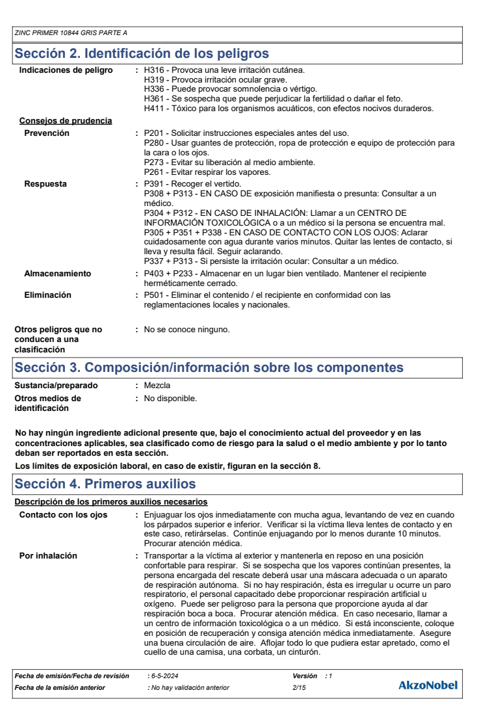
Fragmentos recuperados: [1] fds084-zinc-pr p2, [2] fds082-acrilic p2, [3] fds095-interna p3, [4] fds085-epoxy-e p2, [5] fds098-epoxy-z p3, [6] fds083-epoxy-z p2
¿Qué porcentaje de dióxido de titanio contiene el Sigmadur One Buff 3142 de PPG y cuál es su número CAS?
Fragmentos recuperados: [1] fds065-sigmadu p3, [2] fds065-sigmadu p3, [3] fds065-sigmadu p13
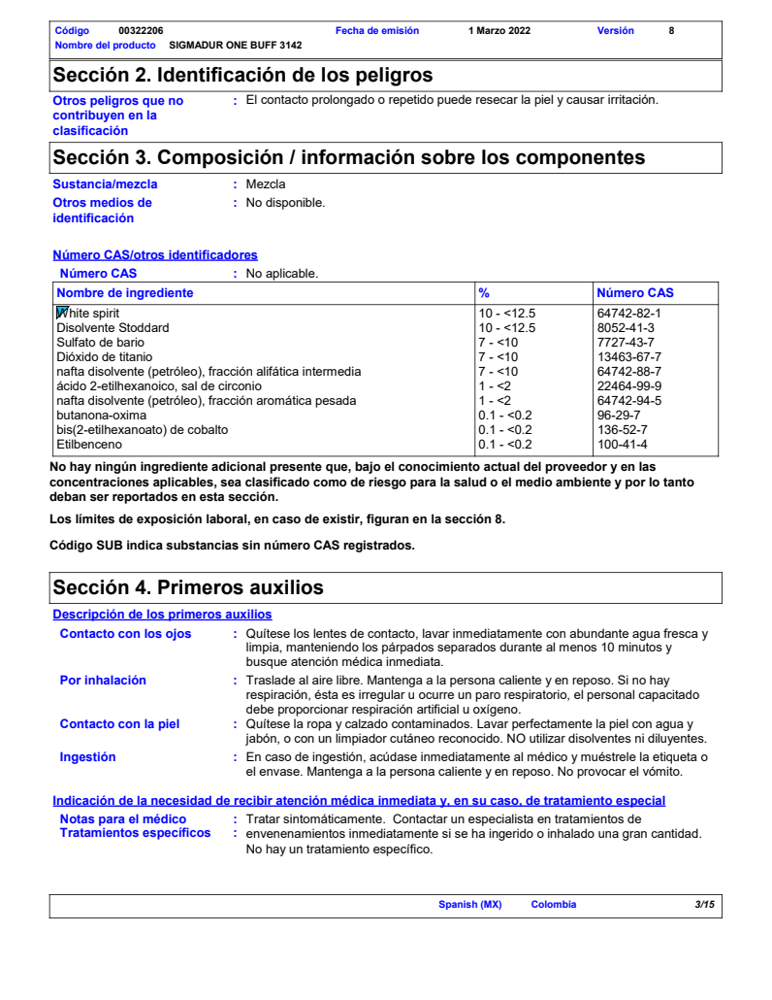
Fragmentos recuperados: [1] fds065-sigmadu p3, [2] fds065-sigmadu p3, [3] fds065-sigmadu p13, [4] fds065-sigmadu p6, [5] fds065-sigmadu p13, [6] fds065-sigmadu p10
Compara la ficha de 2019 y la de 2021 de la Pintura Primera Mano & Acabado de Corona: ¿cómo cambian el tiempo máximo de almacenamiento y la densidad a 20 ºC?
Fragmentos recuperados: [1] fds043-pintura p3, [2] fds029-pintura p3, [3] fds043-pintura p5
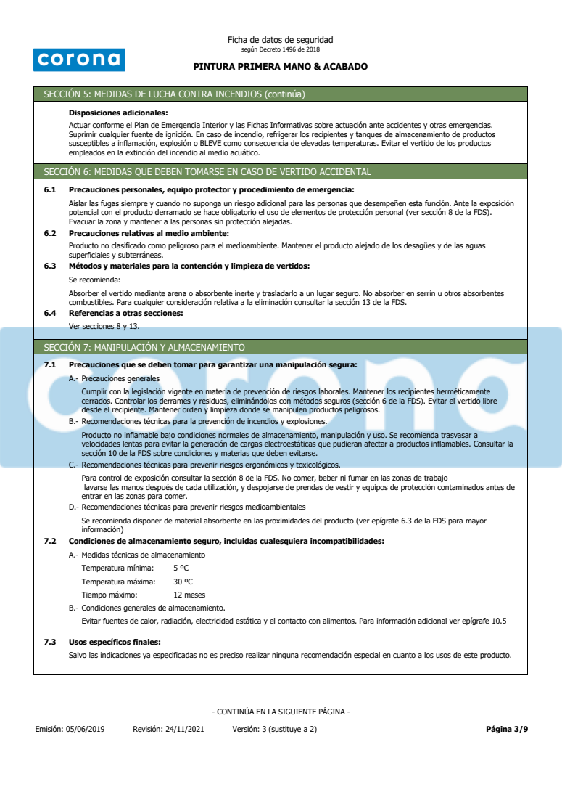
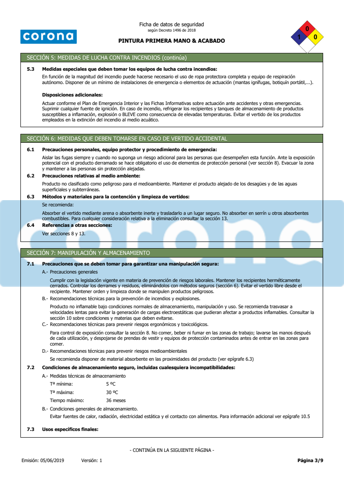
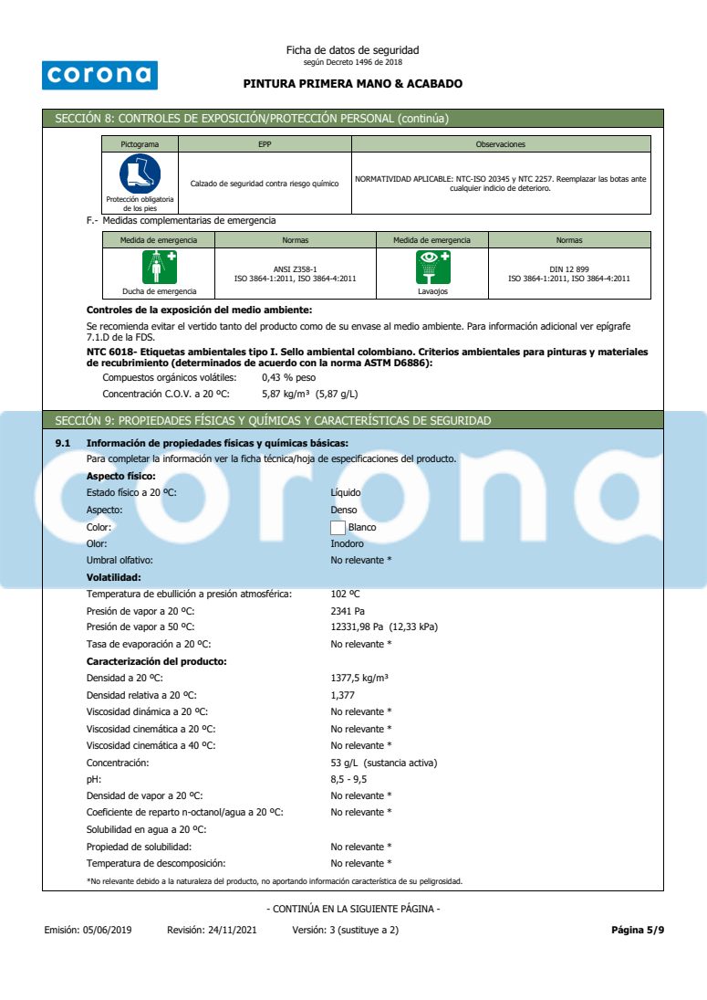
Fragmentos recuperados: [1] fds043-pintura p3, [2] fds029-pintura p3, [3] fds043-pintura p5, [4] fds029-pintura p5, [5] fds043-pintura p5, [6] fds029-pintura p5
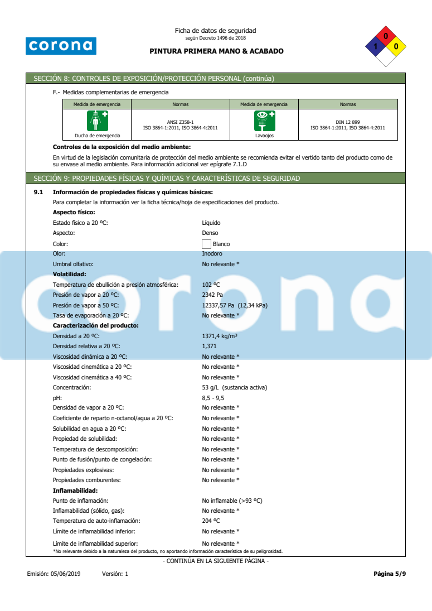
Compara la Pintulaca Rojo Claro 7587 y el Esmalte Top Quality Negro 1772 de Pintuco: ¿cuál está clasificado por toxicidad para la reproducción y qué categoría de líquido inflamable tiene cada uno?
Fragmentos recuperados: [1] fds035-esmalte p7, [2] fds030-esmalte p7, [3] fds038-esmalte p7
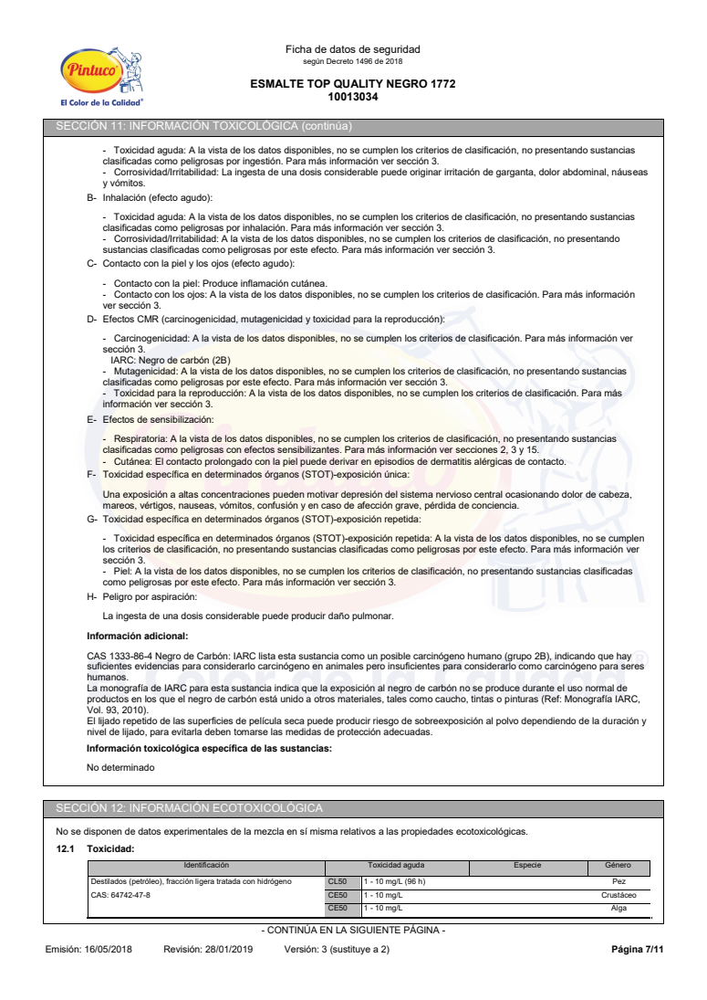
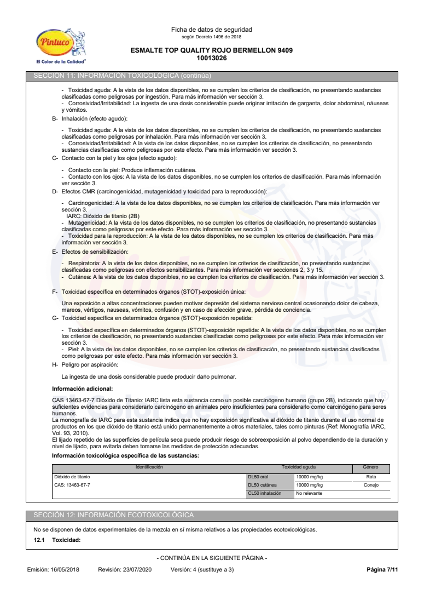
Fragmentos recuperados: [1] fds035-esmalte p7, [2] fds030-esmalte p7, [3] fds038-esmalte p7, [4] fds033-esmalte p7, [5] fds034-pintula p8, [6] fds032-pintula p7
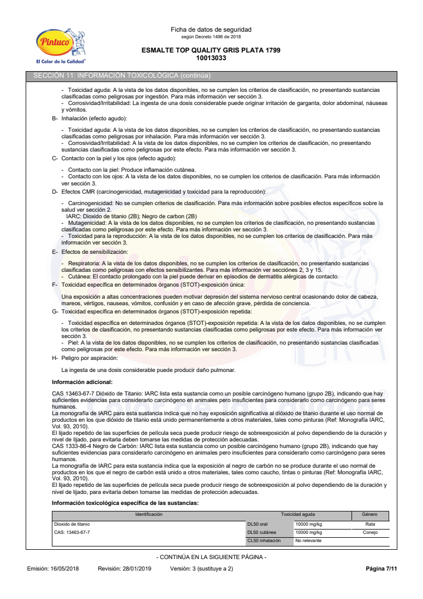
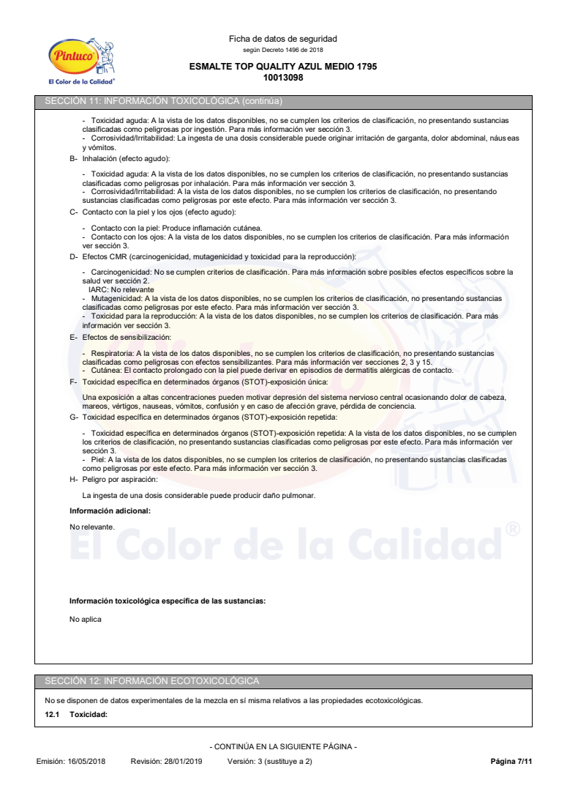
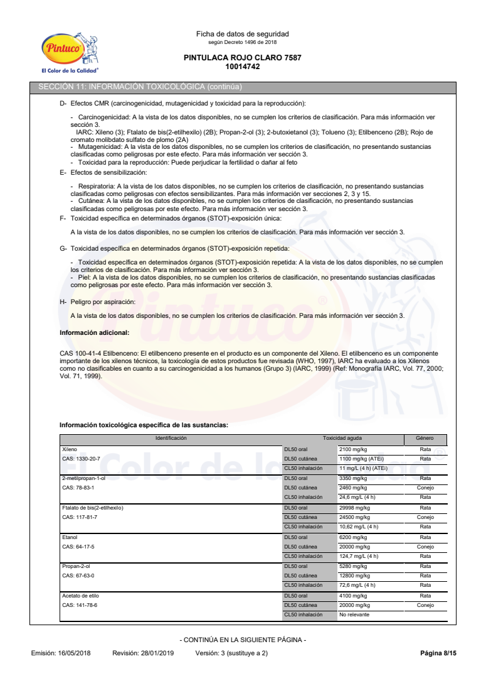
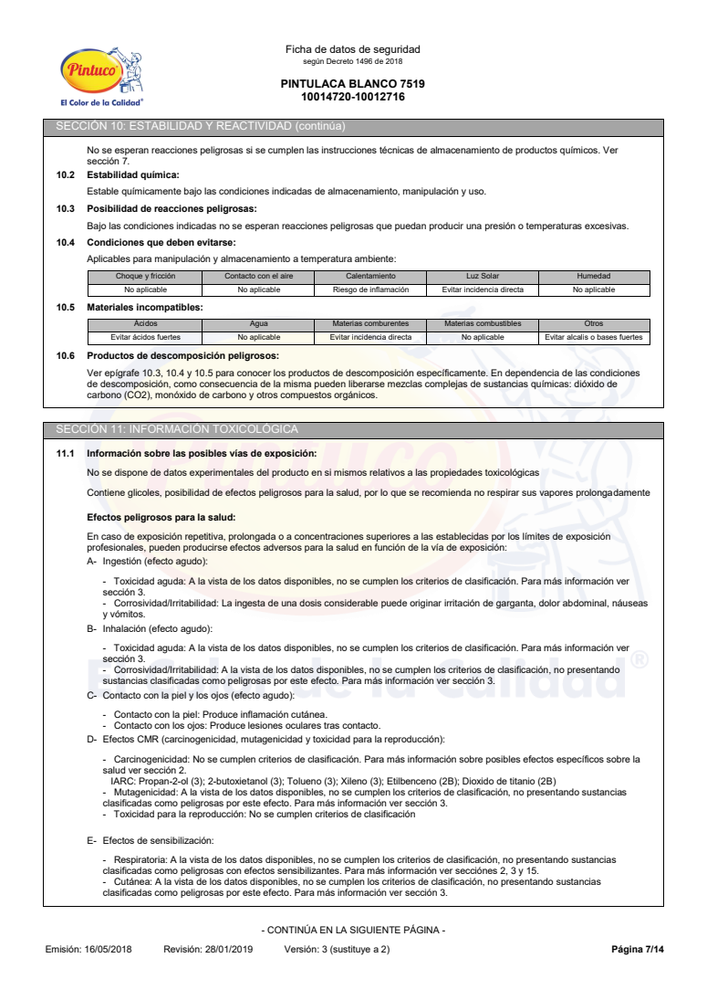